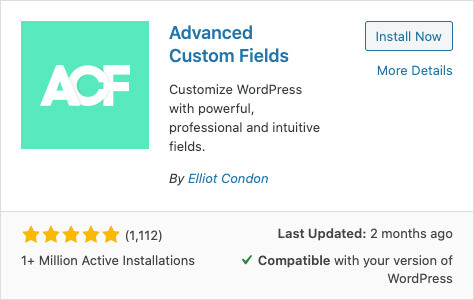

Les champs Titre et Contenu sont efficaces pour afficher les contenus texte de base d'une page ou d'un article, mais il arrive que certains projets requièrent plus de deux champs pour réaliser certaines mise en page.
Par exemple, si l'éditeur exige de pouvoir choisir la couleur de fond de chacune de ses pages, comment lui donner cette possibilité? Un nouveau champ dédié à la couleur de la page sera nécessaire.
Souvent abrégé ACF, Advanced Custom Fields est l'une des extensions les plus utiles aux développeurs WordPress.
Elle permet d'ajouter plusieurs types de champs et d'en créer autant que désiré. Pour reprendre l'exemple précédent, il serait possible d'ajouter un champs de sélection de couleur (color picker).
Dans l'onglet extensions (plugins) du tableau de bord, recherchez Advanced Custom Fields et repérez l'extension créée par Elliot Condon.
Installez et activez là. 
Une fois installée, un onglet ACF (ou en anglais Custom Fields) devrait être visible dans la barre latérale servant de menu.
À partir de cet onglet, il est possible de créer des nouveaux Groupes de champs (New Field Group) en cliquant sur Ajouter (Add New).
Nommez votre nouveau groupe de champs.
Le bouton +Ajouter des champs permet d'ajouter autant de champs que désiré.
Pour chaque champs créé, populez les informations requises: titre, nom, type, etc.
Par exemple, il serait possible de créer un groupe de champ Apparence de la page et de lui ajouter un champs intitulé Couleur de fond constitué d'un sélecteur de couleur.
- La boite Location Rules (emplacement) permet de spécifier où ce nouveau groupe de champs devrait-être visible.
Par exemple, afficher uniquement le groupe de champs Apparence de la page sur les pages de type article.
- Ajuster les Réglages si désiré pour configurer l'apparence du groupe de champs dans la page.
Appuyez sur le bouton Save changes (Publier).
Comme nous avons vu, créer un champ permet à l'éditeur d'ajouter de nouvelles informations sur ses pages, mais pour que ces informations soient utilent, il faut ensuite les récupérer afin de les afficher.
Deux fonctions permettent de les récupérer:
the_field()qui retourne une chaine de caractère.get_field()qui retourne un objet contenant de multiples valeurs.
Couleur
Les valeurs provenant d'un champ de type Sélecteur de couleur sont sauvegardés sous forme d'une chaine de caractères. Il est sonc possible de les récupérer via la fonction the_field(...).
Par exemple:
Texte
Un champ texte peut être créé pour stocker des informations supplémentaires. Ce type de champs est, entre autre, utile lorsqu'une information doit être séparée visuellement du reste du contenu.
Prenons par exemple la page Wikipedia d'un groupe de musique. Si cette page était construite à l'aide de WordPress, le champ titre contiendrait le texte The Offspring et le champs contenu l'ensemble du texte dans la colonne de gauche. Cependant, les éléments dans la colonne de droite proviendraient de champs ACF supplémentaires.
Par exemple, un champ autre nom associé aux pages de type Groupe de musique permettrait à l'éditeur de spécifier si un groupe fut précédemment connu sous un autre nom.
<strong>Autre nom</strong>
<?php the_field('autre_nom'); ?>Liste déroulante
Il est parfois préférable d'offrir à l'éditeur une liste de choix préétablis plutôt qu'un champ texte offrant trop de liberté.
Par exemple, pour ce qui est du pays d'origine, quel devrait-être la valeur pour The Offpring? USA, États-Unis, États Unis d'Amérique, etc. Une liste de choix préétablis règle cette question et offre une cohérence entre les différentes pages.
Il suffit de créer un champ de type Sélection et de lui donner les choix disponibles en format:Valeur affiché sur le site : Valeur afficher dans l'admin
Par exemple:
🇨🇦 Canada : Canada🇺🇸 États-Unis : États-Unis🇫🇷 France : France
Comme pour un champ texte, la valeur peut-être ensuite récupérée via the_field(...).
Un champ image permet de stocker des images supplémentaires.
Pour continuer avec la précédente métaphore, le champ d'image par défaut de WordPress, Image mise de l'avant, ou en anglais Preview, servirait à afficher l'image du groupe dans le haut de la colonne de droite.
Cependant, un champ d'image supplémentaire serait requis afin d'afficher le logo du groupe un peu plus bas.
Un champs ACF Logo serait donc créé. Il y aurait ensuite deux façons d'afficher son contenu.
La façon simple avec the_field(…) retournant un url.
Par exemple:
ou la version plus avancée avec get_field(…) permettant d'obtenir toutes les informations relatives à l'image:
- url
- size
- title
- alt
- caption
- etc.
Ces informations sont enregistrées sour forme d'objet. Il est donc préférable de stocker cet objet dans une variable afin d'accèder à ses sous-propriétés au besoin.
Par exemple, stockons cet objet dans la variable $logo et recréons l'exemple précédent, mais avec l'attribut alt de populé.
>>>EXERCICE PRÉSENTÉ EN CLASSE
Advanced Custom Fields permet d'exporter la structure de ses groupes de champs afin de pouvoir les importer sur un autre site.
Exportation
Il faut aller dans l'onglet ACF et sélectionner l'option Outils (Tools). À cet endroit dans la colonne de gauche, une liste de boites à cocher permet de choisir les groupes de champs à exporter. Lorsque ce choix est terminé, cliquez sur le bouton Exporter le fichier afin d'obtenir un fichier JSON contenant lesdites structures.
Importation
Pour importer des groupes de champs, il faut aussi aller dans l'onglet ACF et sélectionner l'option Outils (Tools). Sur cette page, dans la colonne de droite, se trouve un champs permettant de charger un fichier JSON. Importez le fichier désiré permet de recréer une structure de champs ACF d'un projet à un autre.